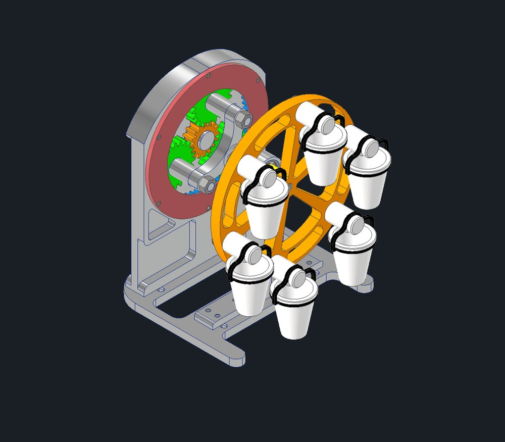

Caricamento del modello 3D…
Trascina la ruota panoramica o la manovella dietro · trascina altrove per ruotare la vista
Trascina col dito e prova a bloccare un pezzo diverso.
Pagina di Alessandro Siano
Tre parti che possono girare, una che blocchi.
Si illumina nell'animazione qui sopra.
Se blocchi insieme due elementi qualsiasi, i satelliti smettono di girare su sé stessi e tutto il ruotismo gira come un pezzo unico, con rapporto 1 : 1. È la marcia «diretta» dei cambi automatici.
Vale con la corona ferma e il moto in entrata dal solare. Esempio: con 50 denti sul solare e 200 sulla corona, i = 1 + 200/50 = 5, cioè il portasatelliti gira 5 volte più lentamente del solare. Nel dispositivo (18 e 66 denti) i = 1 + 66/18 ≈ 4,67.
Scorri di lato →
Il meccanismo costruito per l'Open Day.

Il dispositivo è un riduttore planetario con la corona fissa: il moto entra dal solare, i tre satelliti si dividono il carico e il portasatelliti trasmette il moto, ridotto, a una ruota panoramica con sei cabine.
Con la corona ferma, se il solare fa 14 giri, quanti giri fa il portasatelliti?
Open Day · Scuola d'arti e mestieri Bellinzona
← Tutti i meccanismi